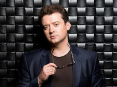

Денис Роднянский Вадимович
Родился 9 декабря 1981 года в Донецке.
Денис Роднянский родился 9 декабря 1981 года в Сновске Черниговской области Украины.
В 2004 году окончил режиссёрский факультет Киевского национального университета культуры и
искусств, мастерская Романа Ширмана. В 2006 году окончил Высшие курсы сценаристов и режиссёров,
мастерская Аллы Суриковой и Владимира Фокина.
В 2002 году его короткометражный документальный фильм «Учитель пения» был отмечен на Московском
фестивале ВГИК дипломом жюри «За любовь к человеку», стал призером Киевского киновидеофестиваля
«Открытая ночь» и участвовал в конкурсной программе Международного Канского видеофестиваля 2003
года.
С 2003 года начал сниматься в кино, появившись в лентах «Завтра будет завтра», «Леди Мэр» и
«Веселая компания». В 2012-м сыграл главную роль в мелодраме «Невеста моего друга». Его герой -
Саша Купцов, который делает предложение своей коллеге Лидии, даже не подозревая, что девушка
была в отношениях с его другом и дала согласие на брак, поскольку устала ждать от любимого
серьезного шага. Героям приходится столкнуться не только с драматичными, но и с комичными
ситуациями, чтобы обрести личное счастье.

Широкую известность ему принесла роль криминалиста Вахтанга Леонова в популярном проекте «Пес» -
истории про Макса, ныне алкоголика, а когда-то лучшего сыщика в городе. У Макса остался
единственный друг - Пес, они по-прежнему раскрывают загадочные убийства. В детективном
телесериале с элементами комедии вместе с ним сыграли: Никита Панфилов, Андрей Саминин, Ольга Олексий, Михаил Жонин.